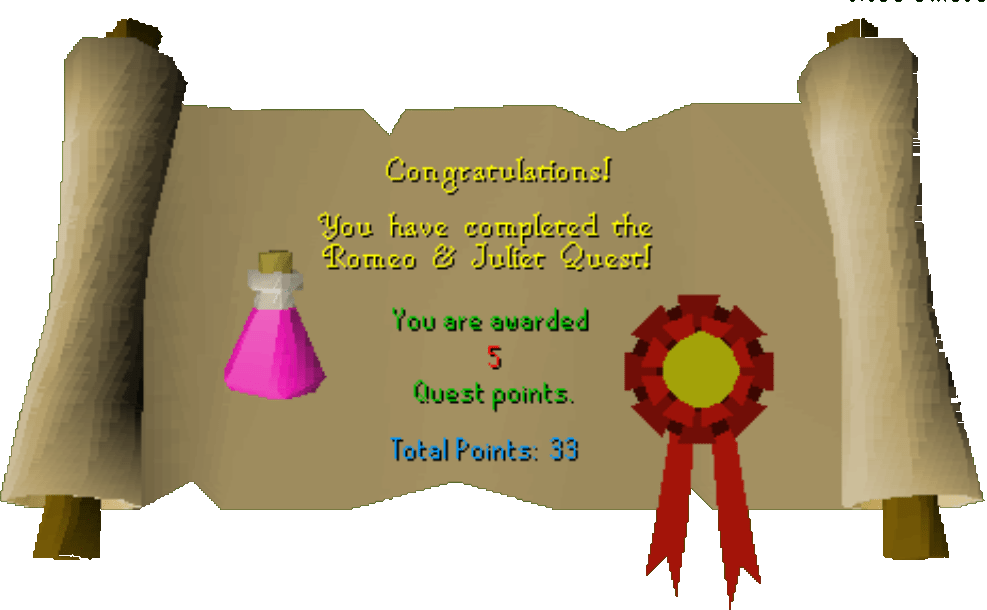

Romeo & Juliet
Description: Romeo & Juliet are desperately in love, but Juliet's father doesn't approve. Help them to find a way to get married and live happily ever after.Difficulty: Novice
Length: Short
Items & Skills Needed:
Reward: 5 Quest points
Instructions:
Talk to Juliet on her 2nd floor balcony to learn about her love affair with Romeo and the complications that have set in. She asks you to take a message to Romeo in Varrock Square.
Find Romeo, and he'll tell you what the letter says. He directs you to Father Lawrence in the chapel to the northeast.
Father Lawrence will tell you that you need to make a special potion — a cadaver potion. He sends you to the apothecary, who can be found just south of the square and a little to the west.
Assuming you have your berries, go to the apothecary and talk to him twice to receive the potion he mixes for you. If you don't have berries yet, you can pick them from the bushes just south of Varrock, near the Dark Wizards' Circle (east of the south gate).
Take the potion back to Juliet. She'll thank you and remind you to go inform Romeo of the plan, because he can "be quite dense sometimes."
Walk back to Romeo and tell him that Juliet has the potion and that he needs to revive her from the crypt. Unfortunately, the poor fool misunderstands and thinks she is dead permanently. What a great ending — Juliet dies, and Romeo lives his life in misery.
You'll get your reward after talking to Romeo. Who cares about a bad ending, as long as you get your reward, right?
Congratulations, Quest Complete!

This quest guide was written on RuneHQ by Gnat88.
This quest guide was entered into the database on Tue, Mar 02, 2004, at 09:58:20 PM by Weezy and was last updated on Wed, Mar 31, 2004, at 05:15:59 PM.